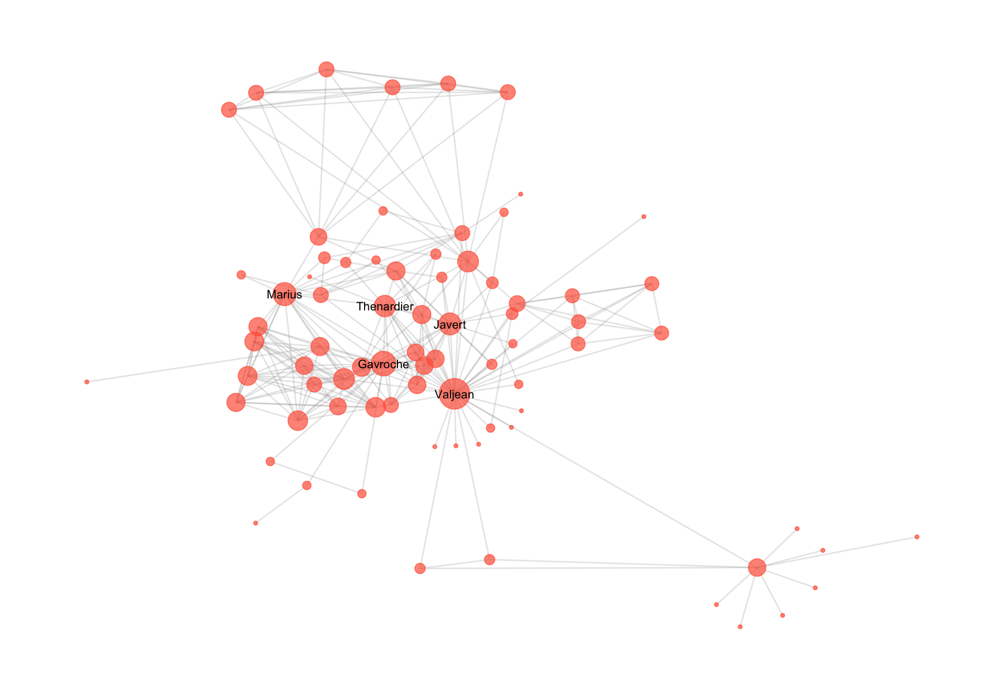
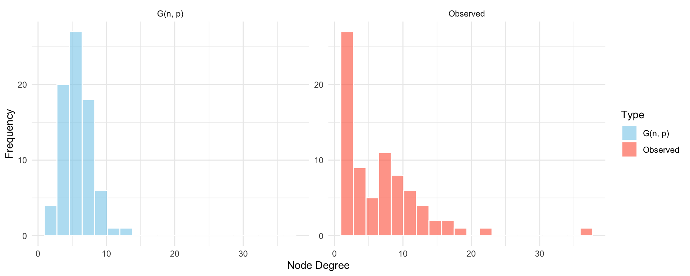
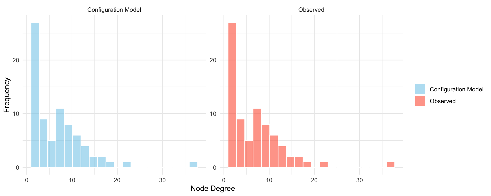
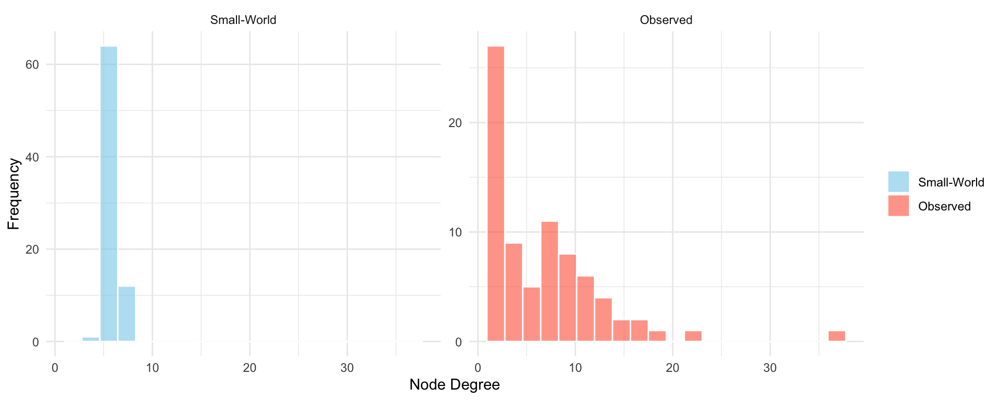
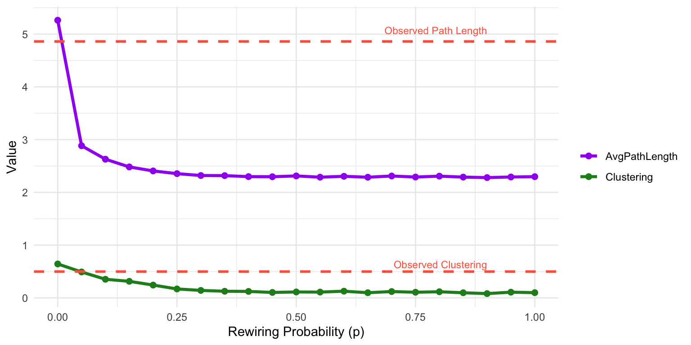

library(igraph)
library(ggraph)
library(graphlayouts)
library(networkdata)
library(tidyverse)16 Random Graph Models
A random graph model is a probability distribution over a set of possible networks, defined by a set of parameters that control how likely different graph structures are to occur. Instead of producing a single deterministic network, the model generates an ensemble of networks, each drawn according to specific rules or constraints. These models allow us to explore what kinds of network structures arise by chance and to test whether observed features, such as clustering or degree patterns, are more or less likely than expected under a given set of assumptions.
This chapter introduces a range of models used to represent and understand the structure of social and relational networks. We begin with the classic \(G(n,p)\) random graph model, in which each pair of nodes is connected independently with a fixed probability. While analytically tractable and conceptually simple, \(G(n,p)\) falls short in capturing the structural complexity of real-world networks; it fails to account for common features such as clustering, skewed degree distributions, or short average path lengths.
To address these shortcomings, we explore several alternative models that incorporate more realistic structural constraints. The small-world model captures the coexistence of high local clustering and global reachability observed in many social systems. The configuration model enables the generation of random graphs with a fixed degree sequence, offering more control over node-level connectivity patterns. For each model, we discuss its definition, how to simulate or estimate it, and its relevance for modeling real network data.
While these basic random graph models can serve as a simple yet informative baseline for understanding connectivity patterns, they only allow us to control only a single feature (e.g. edge probability and degree sequence) at a time, limiting its usefulness for modeling richer network patterns. This leads the way to out next chapter where we introduce exponential random graph models (ERGMs), which is a powerful and flexible framework that allows for the specification of multiple dependencies between ties simultaneously; such as reciprocity, triadic closure, and attribute-based mixing.
16.1 Packages Needed for this Chapter
16.2 The Erdős–Rényi Model: \(G(n, p)\)
The Erdős–Rényi model (Erdos and Rényi 1959), commonly denoted as \(G(n, p)\), is one of the earliest and most fundamental models in the study of random graphs. In this model, a graph is constructed by taking a set of \(n\) nodes and forming edges between each pair of nodes independently with fixed probability \(p\), where \(0 < p < 1\). This means that every possible dyad in the network has the same chance of being connected, and the existence of one edge has no influence on any other. The result is a fully dyad-independent structure with homogeneous tie probabilities.
One of the key implications of the \(G(n, p)\) model is that it defines a probability distribution over the entire space of possible graphs with \(n\) nodes. Each graph in this space is assigned a probability based on how many edges it contains and the value of \(p\). The expected number of edges in a graph generated from \(G(n, p)\) is \(\binom{n}{2} \cdot p\), and the degree of each node follows a binomial distribution with parameters \((n - 1, p)\). For sufficiently large \(n\), this degree distribution approaches a normal distribution due to the central limit theorem. The expected degree of a node is approximately \((n - 1) \cdot p\), and the overall density of the graph is close to \(p\).
If we observe an empirical network and wish to fit a \(G(n, p)\) model to it, the most natural estimate for \(p\) is the observed edge density. This can be computed as the number of edges divided by the total number of possible dyads, giving the maximum likelihood estimate \(\hat{p} = \frac{m}{\binom{n}{2}}\), where \(m\) is the number of observed edges.
While the \(G(n, p)\) model is mathematically elegant and provides a useful baseline for comparison, it fails to capture many features commonly seen in real-world networks. Most notably, it cannot account for clustering (triadic closure), skewed degree distributions, or structural dependencies such as reciprocity or community structure. Moreover, the model allows control over only one parameter—tie probability—making it impossible to simultaneously model multiple features of network structure.
Because of these limitations, the \(G(n, p)\) model is best used as a null model for hypothesis testing or as a starting point for understanding more complex generative processes. It helps clarify which features of an observed network deviate from randomness and motivates the need for more structured models such as the configuration model, the small-world model, or exponential random graph models, which allow for greater flexibility in representing real-world relational data.
Example: \(G(n,p)\)
To see why the \(G(n, p)\) model is often an inadequate representation of real-world networks, we can compare its properties to those of an actual empirical network. A typical social or informational network displays three features that are not captured well by \(G(n, p)\): a right-skewed degree distribution (with hubs), high clustering or triadic closure, and short average path lengths. While \(G(n, p)\) can match the density of a network, it assumes a binomial (or normal) degree distribution, minimal clustering, and does not account for structural heterogeneity.
The example below uses the igraph package in R and a real network dataset of moderate-to-large size to illustrate these differences. We load a real-world network; a network of co-appearances of characters in Victor Hugo’s novel “Les Miserables” which can be loaded from the networkdata package. The network is visulaize din Figure 16.1.

We compute this its key structural properties, then generate a random graph with the same number of nodes and expected density using sample_gnp(). We then compare the two in terms of degree distribution, transitivity (clustering), and average geodesic distance.
The code below yields Table 16.1 which summarizes key structural properties of the observed Les Misérables network and the corresponding \(G(n, p)\) random graph. These include the global clustering coefficient (measuring the tendency of nodes to form closed triads), the average geodesic distance (a measure of path efficiency), and the maximum degree (the highest number of connections any single node has).
The observed network shows substantially higher clustering, a slightly shorter average path length, and a much larger maximum degree. These results highlight that the empirical network is both more locally cohesive and more hierarchically structured than its random counterpart. The presence of hubs and local clusters—common in real-world networks—is not reproduced by the \(G(n, p)\) model, which assumes uniform and independent edge probabilities.
Together, these differences support the conclusion that random tie formation alone cannot explain the structure of this network.
library(knitr)
# Load the Les Misérables network from networkdata
data("miserables")
g_obs <- miserables
# Basic stats of the observed network
n <- vcount(g_obs)
m <- ecount(g_obs)
density_obs <- edge_density(g_obs)
deg_obs <- degree(g_obs)
clustering_obs <- transitivity(g_obs, type = "global")
dist_obs <- mean_distance(g_obs, directed = FALSE, unconnected = TRUE)
# Generate a G(n, p) graph with the same density
set.seed(123)
g_gnp <- sample_gnp(n = n, p = density_obs, directed = FALSE)
deg_gnp <- degree(g_gnp)
clustering_gnp <- transitivity(g_gnp, type = "global")
dist_gnp <- mean_distance(g_gnp, directed = FALSE, unconnected = TRUE)
# Combine comparison into a data frame
comparison <- data.frame(
Model = c("Observed", "G(n, p)"),
Clustering = c(clustering_obs, clustering_gnp),
AvgPathLength = c(dist_obs, dist_gnp),
MaxDegree = c(max(deg_obs), max(deg_gnp))
)
# Format with kable
kable(comparison, caption = "Comparison of structural features: Observed vs G(n, p)",
digits = 3, align = "c")| Model | Clustering | AvgPathLength | MaxDegree |
|---|---|---|---|
| Observed | 0.499 | 4.861 | 36 |
| G(n, p) | 0.086 | 2.636 | 12 |
The comparison confirms that the \(G(n, p)\) model falls short in capturing key structural features of real-world networks. The observed network displays a right-skewed degree distribution, with several highly connected nodes, while the random graph shows a tight distribution around the mean. The clustering coefficient in the observed network is substantially higher, indicating a tendency for character triads to form—an effect not captured by dyad-independent models. Although both networks have relatively short path lengths, this is largely coincidental and does not reflect the underlying efficiency created by hubs or clustered substructures.
To further illustrate the limitations of the \(G(n, p)\) model, we also examine the degree distributions of the observed network and the simulated random graph. Real-world networks often exhibit right-skewed degree distributions, with many nodes having few connections and a small number of hubs with very high degree. In contrast, the \(G(n, p)\) model produces a binomial (and approximately normal) degree distribution, where most nodes have degrees clustered around the mean. By comparing these two distributions side by side, we can observe how poorly the random model captures the heterogeneity present in the empirical network.
# Plot the degree distributions
df_deg <- data.frame(
Degree = c(deg_obs, deg_gnp),
Type = rep(c("Observed", "G(n, p)"), times = c(length(deg_obs), length(deg_gnp)))
)
ggplot(df_deg, aes(x = Degree, fill = Type)) +
geom_histogram(position = "identity", bins = 20, alpha = 0.6, color = "white") +
facet_wrap(~Type, scales = "free_y") +
labs(x = "Node Degree", y = "Frequency") +
theme_minimal() +
scale_fill_manual(values = c("skyblue", "tomato")) +
theme(legend.title = element_blank())
This example underscores the need for more realistic network models that can capture multiple structural properties simultaneously. While the \(G(n, p)\) model offers a useful theoretical baseline, its assumptions of uniform edge probability and independent tie formation lead to networks with unrealistic degree distributions. In particular, it fails to capture the heterogeneity observed in many real-world systems, where some nodes act as hubs while others have very few connections. To address this limitation, we turn to the configuration model, which allows us to fix the degree sequence of the network and thereby preserve node-level connectivity patterns. This model represents a natural next step toward our second random graph model.
NoteNote: \(G(n, p)\) and CUG Given Density
The \(G(n, p)\) model is mathematically equivalent to a Conditional Uniform Graph (CUG) test given density. In both cases, edges are formed between node pairs independently with fixed probability \(p\), and the overall network density is preserved on average across simulations.
However, there are key differences in interpretation and usage:
The \(G(n, p)\) model is a generative model used to define a probability distribution over the space of graphs with \(n\) nodes and tie probability \(p\). It is often used in theoretical network science as a baseline or null model.
A CUG test given density is a hypothesis testing framework. It conditions on the observed number of nodes and the expected density, and tests whether an observed network statistic (e.g., mutual ties, clustering) deviates significantly from what would be expected by chance.
In practice, simulating random graphs under the \(G(n, p)\) model is functionally identical to conducting a CUG test with fixed density. The distinction lies in whether the model is used for generative modeling or for evaluating the statistical significance of observed network features.
16.3 The Configuration Model
As discussed in the previous section, the \(G(n, p)\) model assumes that all ties are equally likely and independent, which leads to unrealistic degree distributions. In many real-world networks, however, some nodes are consistently more connected than others. To capture this degree heterogeneity, we turn to the configuration model (Bender and Canfield 1978), which generates random graphs while preserving the exact degree sequence of the observed network.
Intuitively, the configuration model works by first decomposing the network into “stubs”—half-edges representing the degree of each node. These stubs are then randomly paired to form complete edges, resulting in a network that maintains the original node degrees but otherwise randomizes the connections.
For example, if a node has degree 3, it is assigned 3 stubs. The model then shuffles all stubs and connects them randomly in pairs. This procedure generates a new graph where each node has the same degree as in the original network, but where the overall topology (i.e., who connects to whom) is random.
While powerful, the configuration model comes with some caveats. Because stubs are paired at random, the resulting graphs may contain self-loops (nodes connected to themselves) or multi-edges (multiple edges between the same pair of nodes). Additionally, the sum of the degree sequence must be even for the pairing to be valid.
Example: Configuration Model
In this example, we continue with the Les Misérables co-appearance network and compare it to a random network generated from the configuration model. The goal is to assess how well the configuration model replicates key structural features of the observed network when it exactly preserves the degree sequence but randomizes the specific tie configuration.
We use the igraph package to compute network properties and simulate the configuration model using sample_degseq(). The configuration model guarantees that each node retains its observed degree. We create a comparison table and visualize the degree distribution as before in Table 16.2 and Figure 16.3.
# Get observed degree sequence
deg_seq <- degree(g_obs)
# Compute observed properties
clustering_obs <- transitivity(g_obs, type = "global")
dist_obs <- mean_distance(g_obs, directed = FALSE, unconnected = TRUE)
# Simulate configuration model with the same degree sequence
set.seed(123)
g_conf <- sample_degseq(deg_seq, method = "fast.heur.simple")
# Compute simulated properties
clustering_conf <- transitivity(g_conf, type = "global")
dist_conf <- mean_distance(g_conf, directed = FALSE, unconnected = TRUE)
# Degree distribution comparison
deg_conf <- degree(g_conf)
deg_df <- data.frame(
Degree = c(deg_seq, deg_conf),
Type = rep(c("Observed", "Configuration Model"), times = c(length(deg_seq), length(deg_conf)))
)
# Summary table
conf_comparison <- data.frame(
Model = c("Observed", "Configuration Model"),
Clustering = c(clustering_obs, clustering_conf),
AvgPathLength = c(dist_obs, dist_conf),
MaxDegree = c(max(deg_seq), max(deg_conf))
)
# Display comparison table with kable
kable(conf_comparison, caption = "Comparison of structural features: Observed vs Configuration Model",
digits = 3, align = "c")| Model | Clustering | AvgPathLength | MaxDegree |
|---|---|---|---|
| Observed | 0.499 | 4.861 | 36 |
| Configuration Model | 0.239 | 2.503 | 36 |
ggplot(deg_df, aes(x = Degree, fill = Type)) +
geom_histogram(position = "identity", bins = 20, alpha = 0.6, color = "white") +
facet_wrap(~Type, scales = "free_y") +
labs(x = "Node Degree", y = "Frequency") +
scale_fill_manual(values = c("skyblue", "tomato")) +
theme_minimal() +
theme(legend.title = element_blank())
As expected, the degree distribution of the simulated network matches that of the original exactly. However, when we examine higher-order properties, such as the global clustering coefficient and average path length, we find notable differences. The observed network has significantly more clustering, suggesting the presence of structured triadic closure that is not reproduced by the configuration model’s randomized pairing process. The average path length may also differ, although it often remains in the same general range.
These results highlight an important distinction: while the configuration model controls for degree-based features, it does not account for clustering, community structure, or other forms of structural dependency. As such, it is useful as a baseline or null model for testing whether observed patterns can be explained by degree alone.
NoteNote: Configuration Model vs. CUG Given Degree
The configuration model and a Conditional Uniform Graph (CUG) test given degree both generate random networks that preserve the observed degree sequence. In this sense, they are conceptually aligned: both assume that node-level connectivity (i.e., degrees) is fixed and use this constraint to explore how other structural features might arise by chance.
The key distinction lies in how each is used. The configuration model is a generative model; it produces random graphs that exactly match a specified degree sequence, often for theoretical or simulation purposes. A CUG test given degree, on the other hand, is a hypothesis testing framework. It evaluates whether a particular network statistic (such as clustering or transitivity) in the observed network is unusually high or low compared to what would be expected under random tie arrangement, given the same degree sequence.
The configuration model preserves the observed node degrees exactly, resulting in a degree distribution identical to that of the real network. This stands in contrast to the \(G(n, p)\) model, which smooths the degree distribution into a binomial (or normal) form. However, because tie formation is otherwise random, the configuration model still fails to replicate higher-order structures such as clustering. The comparison table shows that while the configuration model matches degree statistics perfectly, its clustering coefficient and average path length still differ from those of the observed network.
This highlights both the strength and the limits of the configuration model. It improves on \(G(n, p)\) by controlling for degree heterogeneity but remains structurally random beyond that. In practice, this makes it a useful null model when testing for effects that go beyond degree constraints—especially in the context of CUG tests given degree.
16.4 The Small-World Model
Many real-world networks exhibit the so-called small-world phenomenon: they have relatively short average path lengths, yet remain highly clustered. This means that although nodes tend to form local groups or neighborhoods, information or influence can still spread efficiently through the network. The small-world model (Watts and Strogatz 1998), was designed to capture this combination of local clustering and global reachability.
The model begins with a ring lattice, where each node is connected to a fixed number of its nearest neighbors on either side. This initial structure is highly regular and highly clustered, but has long average path lengths. To introduce randomness and reduce path length, the model rewires each edge with a fixed probability \(p\). When \(p = 0\), the network remains completely regular. When \(p = 1\), all ties are rewired randomly, resulting in a Bernoulli random graph. For intermediate values of \(p\) (e.g., \(0 < p < 0.5\)), the resulting networks retain much of their local clustering while dramatically lowering the average path length; a hallmark of small-world structure.
This simple rewiring mechanism leads to networks that exhibit both high clustering (like regular lattices) and short path lengths (like random graphs), capturing the structural characteristics observed in many social, biological, and technological networks.
However, the model also comes with some limitations. In its basic form, all nodes have the same degree, which may be unrealistic for empirical networks that exhibit degree heterogeneity. Additionally, for \(p\) close to 1, the model becomes essentially equivalent to a Bernoulli random graph, losing the small-world structure.
Despite these limitations, the small-world model remains a useful generative model for studying how global efficiency and local cohesion can coexist in networks. It also serves as a bridge between purely regular and purely random topologies.
Example: The Small World Model
To evaluate how well the small-world model captures structural features of a real network, we simulate a small-world graph using the same number of nodes and approximate average degree as the Les Misérables co-appearance network. We then compare the simulated graph to the observed one in terms of degree distribution, clustering, and average path length.
The simulation uses igraph::sample_smallworld(), which generates a Watts–Strogatz small-world graph by starting from a regular ring lattice and randomly rewiring edges with a given probability \(p\). We set \(p = 0.05\) to introduce moderate randomness while maintaining local structure (we discuss the choice of \(p\) in more detail below).
avg_deg_obs <- mean(deg_obs)
k <- round(avg_deg_obs / 2) # average degree per side for ring lattice
# Simulate small-world graph
set.seed(123)
g_sw <- sample_smallworld(dim = 1, size = n, nei = k, p = 0.05)
# Compute properties
clustering_obs <- transitivity(g_obs, type = "global")
clustering_sw <- transitivity(g_sw, type = "global")
dist_obs <- mean_distance(g_obs, directed = FALSE, unconnected = TRUE)
dist_sw <- mean_distance(g_sw, directed = FALSE, unconnected = TRUE)
deg_sw <- degree(g_sw)
# Comparison table
sw_comparison <- data.frame(
Model = c("Observed", "Small-World"),
Clustering = c(clustering_obs, clustering_sw),
AvgPathLength = c(dist_obs, dist_sw),
MaxDegree = c(max(deg_obs), max(deg_sw))
)
# Print formatted table
kable(sw_comparison, caption = "Comparison of structural features: Observed vs Small-World Model",
digits = 3, align = "c")| Model | Clustering | AvgPathLength | MaxDegree |
|---|---|---|---|
| Observed | 0.499 | 4.861 | 36 |
| Small-World | 0.498 | 3.778 | 7 |
# Degree distribution
deg_df <- data.frame(
Degree = c(deg_sw, deg_obs),
Type = rep(c("Small-World","Observed"), times = c(length(deg_obs), length(deg_sw)))
)
# Reverse the factor levels
deg_df$Type <- factor(deg_df$Type, levels = c("Small-World", "Observed"))
ggplot(deg_df, aes(x = Degree, fill = Type)) +
geom_histogram(position = "identity", bins = 20, alpha = 0.6, color = "white") +
facet_wrap(~Type, scales = "free_y") +
labs(x = "Node Degree", y = "Frequency") +
scale_fill_manual(values = c("skyblue","tomato")) +
theme_minimal() +
theme(legend.title = element_blank())
The simulation summarized in Table 16.3 demonstrates how the small-world model approximates certain properties of the observed network. As shown in the table, the simulated network achieves a relatively short average path length, similar to that of the Les Misérables network, due to the introduction of random long-range ties. The clustering coefficient remains substantial, reflecting the model’s ability to preserve local neighborhood structure.
However, the degree distribution in the small-world model shown in Figure 16.4 remains relatively narrow, with most nodes having degrees close to the average. This limitation highlights that while the small-world model captures some global and local properties, it does not account for degree heterogeneity. The results show that the small-world model offers a useful structural middle ground between regular and fully random graphs but still lacks the full complexity observed in empirical networks.
Note that the choice of the rewiring probability \(p\) in the small-world model is crucial, as it balances regularity and randomness. Small values of \(p\) (e.g., between 0.01 and 0.2) are typically chosen to introduce enough randomness to significantly reduce path lengths, while still preserving high clustering. If \(p\) is too low, the network remains overly regular; if \(p\) is too high, the network behaves like a random graph and loses its local structure. In practice, \(p\) is often selected empirically to achieve small-world characteristics (high clustering and short average path length) relative to the number of nodes and degree.
To illustrate how the small-world model transitions between regular and random structure, we simulate multiple networks with the same number of nodes as Les Misérables network with varying values of the rewiring probability \(p\) and track how two key properties (clustering and average path length) change. This helps identify a “sweet spot” for \(p\) where the network retains high clustering but achieves short global paths, capturing the essence of small-world structure. The results are shown in Figure 16.5.

The plot in Figure 16.5 shows a sharp transition in network structure as \(p\) increases. At \(p = 0\), the network is a regular lattice: clustering is high, but average path length is long. As \(p\) increases slightly (e.g., \(p \approx 0.1\)), the average path length drops rapidly due to the introduction of long-range shortcuts, while clustering remains relatively high. This intermediate range is where small-world characteristics emerge.
As \(p\) approaches 1, the network becomes increasingly random (think \(G(n,p)\)): clustering drops off, and path length stabilizes at a low level. This demonstrates the trade-off between local cohesion and global efficiency controlled by the rewiring parameter \(p\).
16.5 Beyond the Basic Random Graph Models
The models we’ve considered so far; \(G(n, p)\), the configuration model, and the small-world model, each represent increasingly realistic ways to model network structure. However, even these models have important limitations. Most notably, they assume that ties form independently of one another, or they control for only a narrow set of structural features (such as degree sequence or rewiring probability).
These limitations motivate the need for a more flexible and expressive modeling framework, one that allows for dependencies between ties and the simultaneous inclusion of multiple structural features. Exponential random graph models (ERGMs) address this by explicitly modeling the probability of a network as a function of observed local configurations, such as mutual ties, stars, and triangles. Rather than assuming independent tie formation, ERGMs can incorporate structural dependencies like reciprocity, transitivity, or popularity effects, offering a way to formalize and test competing social mechanisms. In doing so, ERGMs extend beyond purely generative models and provide a principled statistical approach for evaluating whether specific network features occur more or less frequently than expected under competing structural assumptions.